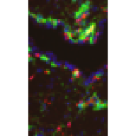

Introduction to the SpatialFeatureExperiment class
Lambda Moses, Lior Pachter
Jul 22, 2024
Source:vignettes/SFE.Rmd
SFE.RmdInstallation
This package can be installed from Bioconductor:
if (!requireNamespace("BiocManager", quietly = TRUE))
install.packages("BiocManager")
BiocManager::install("SpatialFeatureExperiment")Class structure
Introduction
SpatialFeatureExperiment (SFE) is a new S4 class built on top of SpatialExperiment
(SPE). SpatialFeatureExperiment incorporates geometries and
geometry operations with the sf
package. Examples of supported geometries are Visium spots represented
with polygons corresponding to their size, cell or nuclei segmentation
polygons, tissue boundary polygons, pathologist annotation of
histological regions, and transcript spots of genes. Using
sf, SpatialFeatureExperiment leverages the
GEOS C++ libraries underlying sf for geometry operations,
including algorithms for for determining whether geometries intersect,
finding intersection geometries, buffering geometries with margins, etc.
A schematic of the SFE object is shown below:

Schematics of the SFE object
Below is a list of SFE features that extend the SPE object:
-
colGeometriesaresfdata frames associated with the entities that correspond to columns of the gene count matrix, such as Visium spots or cells. The geometries in thesfdata frames can be Visium spot centroids, Visium spot polygons, or for datasets with single cell resolution, cell or nuclei segmentations. MultiplecolGeometriescan be stored in the same SFE object, such as one for cell segmentation and another for nuclei segmentation. There can be non-spatial, attribute columns in acolGeometryrather thancolData, because thesfclass allows users to specify how attributes relate to geometries, such as “constant”, “aggregate”, and “identity”. See theagrargument of thest_sfdocumentation. -
colGraphsare spatial neighborhood graphs of cells or spots. The graphs have classlistw(spdeppackage), and thecolPairsofSingleCellExperimentwas not used so no conversion is necessary to use the numerous spatial dependency functions fromspdep, such as those for Moran’s I, Geary’s C, Getis-Ord Gi*, LOSH, etc. Conversion is also not needed for other classical spatial statistics packages such asspatialregandadespatial. -
rowGeometriesare similar tocolGeometries, but support entities that correspond to rows of the gene count matrix, such as genes. A potential use case is to store transcript spots for each gene in smFISH or in situ sequencing based datasets. -
rowGraphsare similar tocolGraphs. A potential use case may be spatial colocalization of transcripts of different genes. -
annotGeometriesaresfdata frames associated with the dataset but not directly with the gene count matrix, such as tissue boundaries, histological regions, cell or nuclei segmentation in Visium datasets, and etc. These geometries are stored in this object to facilitate plotting and usingsffor operations such as to find the number of nuclei in each Visium spot and which histological regions each Visium spot intersects. UnlikecolGeometriesandrowGeometries, the number of rows in thesfdata frames inannotGeometriesis not constrained by the dimension of the gene count matrix and can be arbitrary. -
annotGraphsare similar tocolGraphsandrowGraphs, but are for entities not directly associated with the gene count matrix, such as spatial neighborhood graphs for nuclei in Visium datasets, or other objects like myofibers. These graphs are relevant tospdepanalyses of attributes of these geometries such as spatial autocorrelation in morphological metrics of myofibers and nuclei. With geometry operations withsf, these attributes and results of analyses of these attributes (e.g. spatial regions defined by the attributes) may be related back to gene expression. -
localResultsare similar toreducedDimsinSingleCellExperiment, but stores results from univariate and bivariate local spatial analysis results, such as fromlocalmoran, Getis-Ord Gi*, and local spatial heteroscedasticity (LOSH). Unlike inreducedDims, for each type of results (type is the type of analysis such as Getis-Ord Gi*), each feature (e.g. gene) or pair of features for which the analysis is performed has its own results. The local spatial analyses can also be performed for attributes ofcolGeometriesandannotGeometriesin addition to gene expression andcolData. Results of multivariate spatial analysis such as MULTISPATI PCA can be stored inreducedDims.
library(SpatialFeatureExperiment)
#>
#> Attaching package: 'SpatialFeatureExperiment'
#> The following object is masked from 'package:base':
#>
#> scale
library(SpatialExperiment)
#> Loading required package: SingleCellExperiment
#> Loading required package: SummarizedExperiment
#> Loading required package: MatrixGenerics
#> Loading required package: matrixStats
#>
#> Attaching package: 'MatrixGenerics'
#> The following objects are masked from 'package:matrixStats':
#>
#> colAlls, colAnyNAs, colAnys, colAvgsPerRowSet, colCollapse,
#> colCounts, colCummaxs, colCummins, colCumprods, colCumsums,
#> colDiffs, colIQRDiffs, colIQRs, colLogSumExps, colMadDiffs,
#> colMads, colMaxs, colMeans2, colMedians, colMins, colOrderStats,
#> colProds, colQuantiles, colRanges, colRanks, colSdDiffs, colSds,
#> colSums2, colTabulates, colVarDiffs, colVars, colWeightedMads,
#> colWeightedMeans, colWeightedMedians, colWeightedSds,
#> colWeightedVars, rowAlls, rowAnyNAs, rowAnys, rowAvgsPerColSet,
#> rowCollapse, rowCounts, rowCummaxs, rowCummins, rowCumprods,
#> rowCumsums, rowDiffs, rowIQRDiffs, rowIQRs, rowLogSumExps,
#> rowMadDiffs, rowMads, rowMaxs, rowMeans2, rowMedians, rowMins,
#> rowOrderStats, rowProds, rowQuantiles, rowRanges, rowRanks,
#> rowSdDiffs, rowSds, rowSums2, rowTabulates, rowVarDiffs, rowVars,
#> rowWeightedMads, rowWeightedMeans, rowWeightedMedians,
#> rowWeightedSds, rowWeightedVars
#> Loading required package: GenomicRanges
#> Loading required package: stats4
#> Loading required package: BiocGenerics
#>
#> Attaching package: 'BiocGenerics'
#> The following objects are masked from 'package:stats':
#>
#> IQR, mad, sd, var, xtabs
#> The following objects are masked from 'package:base':
#>
#> anyDuplicated, aperm, append, as.data.frame, basename, cbind,
#> colnames, dirname, do.call, duplicated, eval, evalq, Filter, Find,
#> get, grep, grepl, intersect, is.unsorted, lapply, Map, mapply,
#> match, mget, order, paste, pmax, pmax.int, pmin, pmin.int,
#> Position, rank, rbind, Reduce, rownames, sapply, setdiff, table,
#> tapply, union, unique, unsplit, which.max, which.min
#> Loading required package: S4Vectors
#>
#> Attaching package: 'S4Vectors'
#> The following object is masked from 'package:utils':
#>
#> findMatches
#> The following objects are masked from 'package:base':
#>
#> expand.grid, I, unname
#> Loading required package: IRanges
#> Loading required package: GenomeInfoDb
#> Loading required package: Biobase
#> Welcome to Bioconductor
#>
#> Vignettes contain introductory material; view with
#> 'browseVignettes()'. To cite Bioconductor, see
#> 'citation("Biobase")', and for packages 'citation("pkgname")'.
#>
#> Attaching package: 'Biobase'
#> The following object is masked from 'package:MatrixGenerics':
#>
#> rowMedians
#> The following objects are masked from 'package:matrixStats':
#>
#> anyMissing, rowMedians
library(SFEData)
library(sf)
#> Linking to GEOS 3.10.2, GDAL 3.4.1, PROJ 8.2.1; sf_use_s2() is TRUE
library(Matrix)
#>
#> Attaching package: 'Matrix'
#> The following object is masked from 'package:S4Vectors':
#>
#> expand
library(RBioFormats)
#> BioFormats library version 7.3.0
# Example dataset
(sfe <- McKellarMuscleData(dataset = "small"))
#> see ?SFEData and browseVignettes('SFEData') for documentation
#> loading from cache
#> class: SpatialFeatureExperiment
#> dim: 15123 77
#> metadata(0):
#> assays(1): counts
#> rownames(15123): ENSMUSG00000025902 ENSMUSG00000096126 ...
#> ENSMUSG00000064368 ENSMUSG00000064370
#> rowData names(6): Ensembl symbol ... vars cv2
#> colnames(77): AAATTACCTATCGATG AACATATCAACTGGTG ... TTCTTTGGTCGCGACG
#> TTGATGTGTAGTCCCG
#> colData names(12): barcode col ... prop_mito in_tissue
#> reducedDimNames(0):
#> mainExpName: NULL
#> altExpNames(0):
#> spatialCoords names(2) : imageX imageY
#> imgData names(1): sample_id
#>
#> unit: full_res_image_pixels
#> Geometries:
#> colGeometries: spotPoly (POLYGON)
#> annotGeometries: tissueBoundary (POLYGON), myofiber_full (GEOMETRY), myofiber_simplified (GEOMETRY), nuclei (POLYGON), nuclei_centroid (POINT)
#>
#> Graphs:
#> Vis5A:Geometries
User interfaces to get or set the geometries and spatial graphs
emulate those of reducedDims and row/colPairs
in SingleCellExperiment. Column and row geometries also
emulate reducedDims in internal implementation, while
annotation geometries and spatial graphs differ.
Column and row
Column and row geometries can be get or set with the
dimGeometries() or dimGeometry() function. The
MARGIN argument is as in the apply() function:
MARGIN = 1 means row, and MARGIN = 2 means
column.
dimGeometry() gets or sets one particular geometry by
name of index.
# Get Visium spot polygons
(spots <- dimGeometry(sfe, "spotPoly", MARGIN = 2))
#> Simple feature collection with 77 features and 1 field
#> Geometry type: POLYGON
#> Dimension: XY
#> Bounding box: xmin: 5000 ymin: 13000 xmax: 7000 ymax: 15000
#> CRS: NA
#> First 10 features:
#> geometry sample_id
#> AAATTACCTATCGATG POLYGON ((6472.186 13875.23... Vis5A
#> AACATATCAACTGGTG POLYGON ((5778.291 13635.43... Vis5A
#> AAGATTGGCGGAACGT POLYGON ((7000 13809.84, 69... Vis5A
#> AAGGGACAGATTCTGT POLYGON ((6749.535 13874.64... Vis5A
#> AATATCGAGGGTTCTC POLYGON ((5500.941 13636.03... Vis5A
#> AATGATGATACGCTAT POLYGON ((6612.42 14598.82,... Vis5A
#> AATGATGCGACTCCTG POLYGON ((5501.981 14118.62... Vis5A
#> AATTCATAAGGGATCT POLYGON ((6889.769 14598.22... Vis5A
#> ACGAGTACGGATGCCC POLYGON ((5084.397 13395.63... Vis5A
#> ACGCTAGTGATACACT POLYGON ((5639.096 13394.44... Vis5A
plot(st_geometry(spots))
# Setter
dimGeometry(sfe, "foobar", MARGIN = 2) <- spotsdimGeometries() gets or sets all geometry of the given
margin.
# Getter, all geometries of one margin
(cgs <- dimGeometries(sfe, MARGIN = 2))
#> List of length 2
#> names(2): spotPoly foobar
# Setter, all geometries
dimGeometries(sfe, MARGIN = 2) <- cgsdimGeometryNames() gets or sets the names of the
geometries
(cg_names <- dimGeometryNames(sfe, MARGIN = 2))
#> [1] "spotPoly" "foobar"
# Setter
dimGeometryNames(sfe, MARGIN = 2) <- cg_namescolGeometry(sfe, "spotPoly"),
colGeometries(sfe), and colGeometryNames(sfe)
are shorthands for
dimGeometry(sfe, "spotPoly", MARGIN = 2),
dimGeometries(sfe, MARGIN = 2), and
dimGeometryNames(sfe, MARGIN = 2) respectively. Similarly,
rowGeometr*(sfe, ...) is a shorthand of
dimGeometr*(sfe, ..., MARGIN = 1).
There are shorthands for some specific column or row geometries. For
example, spotPoly(sfe) is equivalent to
colGeometry(sfe, "spotPoly") for Visium spot polygons, and
txSpots(sfe) is equivalent to
rowGeometry(sfe, "txSpots") for transcript spots in single
molecule technologies.
# Getter
(spots <- spotPoly(sfe))
#> Simple feature collection with 77 features and 1 field
#> Geometry type: POLYGON
#> Dimension: XY
#> Bounding box: xmin: 5000 ymin: 13000 xmax: 7000 ymax: 15000
#> CRS: NA
#> First 10 features:
#> geometry sample_id
#> AAATTACCTATCGATG POLYGON ((6472.186 13875.23... Vis5A
#> AACATATCAACTGGTG POLYGON ((5778.291 13635.43... Vis5A
#> AAGATTGGCGGAACGT POLYGON ((7000 13809.84, 69... Vis5A
#> AAGGGACAGATTCTGT POLYGON ((6749.535 13874.64... Vis5A
#> AATATCGAGGGTTCTC POLYGON ((5500.941 13636.03... Vis5A
#> AATGATGATACGCTAT POLYGON ((6612.42 14598.82,... Vis5A
#> AATGATGCGACTCCTG POLYGON ((5501.981 14118.62... Vis5A
#> AATTCATAAGGGATCT POLYGON ((6889.769 14598.22... Vis5A
#> ACGAGTACGGATGCCC POLYGON ((5084.397 13395.63... Vis5A
#> ACGCTAGTGATACACT POLYGON ((5639.096 13394.44... Vis5A
# Setter
spotPoly(sfe) <- spotsAnnotation
Annotation geometries can be get or set with
annotGeometries() or annotGeometry(). In
column or row geometries, the number of rows of the sf data
frame (i.e. the number of geometries in the data frame) is constrained
by the number of rows or columns of the gene count matrix respectively,
because just like rowData and colData, each
row of a rowGeometry or colGeometry
sf data frame must correspond to a row or column of the
gene count matrix respectively. In contrast, an
annotGeometry sf data frame can have any
dimension, not constrained by the dimension of the gene count matrix.
Similar to column and row geometries, annotation geometries have
annotGeometry(), annotGeometries(), and
annotGeometryNames() getters and setters.
# Getter, by name or index
(tb <- annotGeometry(sfe, "tissueBoundary"))
#> Simple feature collection with 1 feature and 2 fields
#> Geometry type: POLYGON
#> Dimension: XY
#> Bounding box: xmin: 5094 ymin: 13000 xmax: 7000 ymax: 14969
#> CRS: NA
#> ID geometry sample_id
#> 7 7 POLYGON ((5094 13000, 5095 ... Vis5A
plot(st_geometry(tb))
# Setter, by name or index
annotGeometry(sfe, "tissueBoundary") <- tb
# Get all annoation geometries as named list
ags <- annotGeometries(sfe)
# Set all annotation geometries with a named list
annotGeometries(sfe) <- ags
# Get names of annotation geometries
(ag_names <- annotGeometryNames(sfe))
#> [1] "tissueBoundary" "myofiber_full" "myofiber_simplified"
#> [4] "nuclei" "nuclei_centroid"
# Set names
annotGeometryNames(sfe) <- ag_namesThere are shorthands for specific annotation geometries. For example,
tissueBoundary(sfe) is equivalent to
annotGeometry(sfe, "tissueBoundary").
cellSeg() (cell segmentation) and nucSeg()
(nuclei segmentation) would first query colGeometries (for
single cell, single molecule technologies, equivalent to
colGeometry(sfe, "cellSeg") or
colGeometry(sfe, "nucSeg")), and if not found, they will
query annotGeometries (for array capture and
microdissection technologies, equivalent to
annotGeometry(sfe, "cellSeg") or
annotGeometry(sfe, "nucSeg")).
# Getter
(tb <- tissueBoundary(sfe))
#> Simple feature collection with 1 feature and 2 fields
#> Geometry type: POLYGON
#> Dimension: XY
#> Bounding box: xmin: 5094 ymin: 13000 xmax: 7000 ymax: 14969
#> CRS: NA
#> ID geometry sample_id
#> 7 7 POLYGON ((5094 13000, 5095 ... Vis5A
# Setter
tissueBoundary(sfe) <- tbSpatial graphs
Column, row, and annotation spatial graphs can be get or set with
spatialGraphs() and spatialGraph() functions.
Similar to dimGeometr* functions,
spatialGraph* functions have a MARGIN
argument. However, since internally, row and column geometries are
implemented very differently from annotation geometries, while row,
column, and annotation graphs are implemented the same way, for the
spatialGraph* functions, MARGIN = 1 means
rows, MARGIN = 2 means columns, and MARGIN = 3
means annotation. Similar to dimGeometry* functions, there
are rowGraph*, colGraph*, and
annotGraph* getter and setter functions for each
margin.
This package wraps functions in the spdep package to
find spatial neighborhood graphs. In this example, triangulation is used
to find the spatial graph; many other methods are also supported, such
as k nearest neighbors, distance based neighbors, and polygon
contiguity.
(g <- findSpatialNeighbors(sfe, MARGIN = 2, method = "tri2nb"))
#> Characteristics of weights list object:
#> Neighbour list object:
#> Number of regions: 77
#> Number of nonzero links: 428
#> Percentage nonzero weights: 7.218755
#> Average number of links: 5.558442
#>
#> Weights style: W
#> Weights constants summary:
#> n nn S0 S1 S2
#> W 77 5929 77 28.0096 309.4083
plot(g, coords = spatialCoords(sfe))
# Set graph by name
spatialGraph(sfe, "graph1", MARGIN = 2) <- g
# Or equivalently
colGraph(sfe, "graph1") <- g
# Get graph by name
g <- spatialGraph(sfe, "graph1", MARGIN = 2L)
# Or equivalently
g <- colGraph(sfe, "graph1")
g
#> Characteristics of weights list object:
#> Neighbour list object:
#> Number of regions: 77
#> Number of nonzero links: 428
#> Percentage nonzero weights: 7.218755
#> Average number of links: 5.558442
#>
#> Weights style: W
#> Weights constants summary:
#> n nn S0 S1 S2
#> W 77 5929 77 28.0096 309.4083For Visium, spatial neighborhood graph of the hexagonal grid can be found with the known locations of the barcodes.
colGraph(sfe, "visium") <- findVisiumGraph(sfe)
plot(colGraph(sfe, "visium"), coords = spatialCoords(sfe))All graphs of the SFE object, or if specified, of the margin of
interest, can be get or set with spatialGraphs() and the
margin specific wrappers.
colGraphs(sfe)
#> $col
#> Characteristics of weights list object:
#> Neighbour list object:
#> Number of regions: 77
#> Number of nonzero links: 428
#> Percentage nonzero weights: 7.218755
#> Average number of links: 5.558442
#>
#> Weights style: W
#> Weights constants summary:
#> n nn S0 S1 S2
#> W 77 5929 77 28.0096 309.4083Similar to dimGeometries(), the graphs have
spatialGraphNames() getter and setter and the margin
specific wrappers.
colGraphNames(sfe)
#> [1] "graph1" "visium"Multiple samples
Thus far, the example dataset used only has one sample. The
SpatialExperiment (SPE) object has a special column in
colData called sample_id, so data from
multiple tissue sections can coexist in the same SPE object for joint
dimension reduction and clustering while keeping the spatial coordinates
separate. It’s important to keep spatial coordinates of different tissue
sections separate because first, the coordinates would only make sense
within the same section, and second, the coordinates from different
sections can have overlapping numeric values.
SFE inherits from SPE, and with geometries and spatial graphs,
sample_id is even more important. The geometry and graph
getter and setter functions have a sample_id argument,
which is optional when only one sample is present in the SFE object.
This argument is mandatory if multiple samples are present, and can be a
character vector for multiple samples or “all” for all samples. Below
are examples of using the getters and setters for multiple samples.
# Construct toy dataset with 2 samples
sfe1 <- McKellarMuscleData(dataset = "small")
#> see ?SFEData and browseVignettes('SFEData') for documentation
#> loading from cache
sfe2 <- McKellarMuscleData(dataset = "small2")
#> see ?SFEData and browseVignettes('SFEData') for documentation
#> loading from cache
spotPoly(sfe2)$sample_id <- "sample02"
(sfe_combined <- cbind(sfe1, sfe2))
#> class: SpatialFeatureExperiment
#> dim: 15123 149
#> metadata(0):
#> assays(1): counts
#> rownames(15123): ENSMUSG00000025902 ENSMUSG00000096126 ...
#> ENSMUSG00000064368 ENSMUSG00000064370
#> rowData names(6): Ensembl symbol ... vars cv2
#> colnames(149): AAATTACCTATCGATG AACATATCAACTGGTG ... TTCCTCGGACTAACCA
#> TTCTGACCGGGCTCAA
#> colData names(12): barcode col ... prop_mito in_tissue
#> reducedDimNames(0):
#> mainExpName: NULL
#> altExpNames(0):
#> spatialCoords names(2) : imageX imageY
#> imgData names(1): sample_id
#>
#> unit: full_res_image_pixels
#> Geometries:
#> colGeometries: spotPoly (POLYGON)
#> annotGeometries: tissueBoundary (GEOMETRY), myofiber_full (GEOMETRY), myofiber_simplified (GEOMETRY), nuclei (POLYGON), nuclei_centroid (POINT)
#>
#> Graphs:
#> Vis5A:
#> sample02:Use the sampleIDs function to see the names of all
samples
sampleIDs(sfe_combined)
#> [1] "Vis5A" "sample02"
# Only get the geometries for the second sample
(spots2 <- colGeometry(sfe_combined, "spotPoly", sample_id = "sample02"))
#> Simple feature collection with 72 features and 1 field
#> Geometry type: POLYGON
#> Dimension: XY
#> Bounding box: xmin: 6000 ymin: 7025.865 xmax: 8000 ymax: 9000
#> CRS: NA
#> First 10 features:
#> sample_id geometry
#> AACACACGCTCGCCGC sample02 POLYGON ((6597.869 7842.575...
#> AACCGCTAAGGGATGC sample02 POLYGON ((6724.811 9000, 67...
#> AACGCTGTTGCTGAAA sample02 POLYGON ((6457.635 7118.991...
#> AACGGACGTACGTATA sample02 POLYGON ((6737.064 8083.571...
#> AATAGAATCTGTTTCA sample02 POLYGON ((7570.153 8564.368...
#> ACAAATCGCACCGAAT sample02 POLYGON ((8000 7997.001, 79...
#> ACAATTGTGTCTCTTT sample02 POLYGON ((6043.169 7843.77,...
#> ACAGGCTTGCCCGACT sample02 POLYGON ((7428.88 7358.195,...
#> ACCAGTGCGGGAGACG sample02 POLYGON ((6460.753 8566.757...
#> ACCCTCCCTTGCTATT sample02 POLYGON ((7847.503 8563.771...
# Only set the geometries for the second sample
# Leaving geometries of the first sample intact
colGeometry(sfe_combined, "spotPoly", sample_id = "sample02") <- spots2
# Set graph only for the second sample
colGraph(sfe_combined, "foo", sample_id = "sample02") <-
findSpatialNeighbors(sfe_combined, sample_id = "sample02")
# Get graph only for the second sample
colGraph(sfe_combined, "foo", sample_id = "sample02")
#> Characteristics of weights list object:
#> Neighbour list object:
#> Number of regions: 72
#> Number of nonzero links: 406
#> Percentage nonzero weights: 7.83179
#> Average number of links: 5.638889
#>
#> Weights style: W
#> Weights constants summary:
#> n nn S0 S1 S2
#> W 72 5184 72 25.82104 289.8299
# Set graph of the same name for both samples
# The graphs are computed separately for each sample
colGraphs(sfe_combined, sample_id = "all", name = "visium") <-
findVisiumGraph(sfe_combined, sample_id = "all")
# Get multiple graphs of the same name
colGraphs(sfe_combined, sample_id = "all", name = "visium")
#> $Vis5A
#> Characteristics of weights list object:
#> Neighbour list object:
#> Number of regions: 77
#> Number of nonzero links: 394
#> Percentage nonzero weights: 6.645303
#> Average number of links: 5.116883
#>
#> Weights style: W
#> Weights constants summary:
#> n nn S0 S1 S2
#> W 77 5929 77 31.68056 311.7544
#>
#> $sample02
#> Characteristics of weights list object:
#> Neighbour list object:
#> Number of regions: 72
#> Number of nonzero links: 366
#> Percentage nonzero weights: 7.060185
#> Average number of links: 5.083333
#>
#> Weights style: W
#> Weights constants summary:
#> n nn S0 S1 S2
#> W 72 5184 72 29.83889 291.5833
# Or just all graphs of the margin
colGraphs(sfe_combined, sample_id = "all")
#> $Vis5A
#> $Vis5A$visium
#> Characteristics of weights list object:
#> Neighbour list object:
#> Number of regions: 77
#> Number of nonzero links: 394
#> Percentage nonzero weights: 6.645303
#> Average number of links: 5.116883
#>
#> Weights style: W
#> Weights constants summary:
#> n nn S0 S1 S2
#> W 77 5929 77 31.68056 311.7544
#>
#>
#> $sample02
#> $sample02$foo
#> Characteristics of weights list object:
#> Neighbour list object:
#> Number of regions: 72
#> Number of nonzero links: 406
#> Percentage nonzero weights: 7.83179
#> Average number of links: 5.638889
#>
#> Weights style: W
#> Weights constants summary:
#> n nn S0 S1 S2
#> W 72 5184 72 25.82104 289.8299
#>
#> $sample02$visium
#> Characteristics of weights list object:
#> Neighbour list object:
#> Number of regions: 72
#> Number of nonzero links: 366
#> Percentage nonzero weights: 7.060185
#> Average number of links: 5.083333
#>
#> Weights style: W
#> Weights constants summary:
#> n nn S0 S1 S2
#> W 72 5184 72 29.83889 291.5833Sample IDs can also be changed, with the
changeSampleIDs() function, with a named vector whose names
are the old names and values are the new names.
sfe_combined <- changeSampleIDs(sfe, replacement = c(Vis5A = "foo", sample02 = "bar"))
sfe_combined
#> class: SpatialFeatureExperiment
#> dim: 15123 77
#> metadata(0):
#> assays(1): counts
#> rownames(15123): ENSMUSG00000025902 ENSMUSG00000096126 ...
#> ENSMUSG00000064368 ENSMUSG00000064370
#> rowData names(6): Ensembl symbol ... vars cv2
#> colnames(77): AAATTACCTATCGATG AACATATCAACTGGTG ... TTCTTTGGTCGCGACG
#> TTGATGTGTAGTCCCG
#> colData names(12): barcode col ... prop_mito in_tissue
#> reducedDimNames(0):
#> mainExpName: NULL
#> altExpNames(0):
#> spatialCoords names(2) : imageX imageY
#> imgData names(1): sample_id
#>
#> unit: full_res_image_pixels
#> Geometries:
#> colGeometries: spotPoly (POLYGON), foobar (POLYGON)
#> annotGeometries: tissueBoundary (POLYGON), myofiber_full (GEOMETRY), myofiber_simplified (GEOMETRY), nuclei (POLYGON), nuclei_centroid (POINT)
#>
#> Graphs:
#> foo: col: graph1, visiumObject construction
From scratch
An SFE object can be constructed from scratch with the assay matrices
and metadata. In this toy example, dgCMatrix is used, but
since SFE inherits from SingleCellExperiment (SCE), other types of
arrays supported by SCE such as delayed arrays should also work.
# Visium barcode location from Space Ranger
data("visium_row_col")
coords1 <- visium_row_col[visium_row_col$col < 6 & visium_row_col$row < 6,]
coords1$row <- coords1$row * sqrt(3)
# Random toy sparse matrix
set.seed(29)
col_inds <- sample(1:13, 13)
row_inds <- sample(1:5, 13, replace = TRUE)
values <- sample(1:5, 13, replace = TRUE)
mat <- sparseMatrix(i = row_inds, j = col_inds, x = values)
colnames(mat) <- coords1$barcode
rownames(mat) <- sample(LETTERS, 5)That should be sufficient to create an SPE object, and an SFE object,
even though no sf data frame was constructed for the
geometries. The constructor behaves similarly to the SPE constructor.
The centroid coordinates of the Visium spots in the toy example can be
converted into spot polygons with the spotDiameter
argument. Spot diameter in pixels in full resolution image can be found
in the scalefactors_json.json file in Space Ranger
output.
sfe3 <- SpatialFeatureExperiment(list(counts = mat), colData = coords1,
spatialCoordsNames = c("col", "row"),
spotDiameter = 0.7)When colData contains columns for the centroid
coordinates, the spatialCoordsNames argument specifies
which columns in colData are for the coordinates, in the
same order as x, y, and z (if applicable). If the coordinates are not in
colData, they can be specified separately in the
spatialCoords argument:
sfe3 <- SpatialFeatureExperiment(list(counts = mat),
spatialCoords = as.matrix(coords1[, c("col", "row")]),
spotDiameter = 0.7)More geometries and spatial graphs can be added after calling the constructor.
Geometries can also be supplied in the constructor.
Space Ranger output
Space Ranger output can be read in a similar manner as in
SpatialExperiment; the returned SFE object has the
spotPoly column geometry for the spot polygons. If the
filtered matrix is read in, then a column graph called
visium will also be present, for the spatial neighborhood
graph of the Visium spots on tissue. The graph is not computed if all
spots are read in regardless of whether they are on tissue.
dir <- system.file("extdata", package = "SpatialFeatureExperiment")
sample_ids <- c("sample01", "sample02")
samples <- file.path(dir, sample_ids)Inside the outs directory:
list.files(file.path(samples[1], "outs"))
#> [1] "filtered_feature_bc_matrix" "spatial"There should also be raw_feature_bc_matrix though this
toy example only has the filtered matrix.
Inside the matrix directory:
list.files(file.path(samples[1], "outs", "filtered_feature_bc_matrix"))
#> [1] "barcodes.tsv" "features.tsv" "matrix.mtx"Inside the spatial directory:
list.files(file.path(samples[1], "outs", "spatial"))
#> [1] "aligned_fiducials.jpg" "barcode_fluorescence_intensity.csv"
#> [3] "detected_tissue_image.jpg" "scalefactors_json.json"
#> [5] "spatial_enrichment.csv" "tissue_hires_image.png"
#> [7] "tissue_lowres_image.png" "tissue_positions.csv"Not all Visium datasets have all the files here. The
barcode_fluorescence_intensity.csv file is only present for
datasets with fluorescent imaging rather than bright field H&E.
(sfe3 <- read10xVisiumSFE(samples, sample_id = sample_ids, type = "sparse",
data = "filtered", images = "hires"))
#> >>> 10X Visium data will be loaded: sample01
#> >>> Adding spatial neighborhood graph to sample01
#> >>> 10X Visium data will be loaded: sample02
#> >>> Adding spatial neighborhood graph to sample02
#> class: SpatialFeatureExperiment
#> dim: 5 25
#> metadata(0):
#> assays(1): counts
#> rownames(5): ENSG00000014257 ENSG00000142515 ENSG00000263639
#> ENSG00000163810 ENSG00000149591
#> rowData names(14): symbol Feature.Type ...
#> Median.Normalized.Average.Counts_sample02
#> Barcodes.Detected.per.Feature_sample02
#> colnames(25): GTGGCGTGCACCAGAG-1 GGTCCCATAACATAGA-1 ...
#> TGCAATTTGGGCACGG-1 ATGCCAATCGCTCTGC-1
#> colData names(10): in_tissue array_row ... channel3_mean channel3_stdev
#> reducedDimNames(0):
#> mainExpName: NULL
#> altExpNames(0):
#> spatialCoords names(2) : pxl_col_in_fullres pxl_row_in_fullres
#> imgData names(4): sample_id image_id data scaleFactor
#>
#> unit: full_res_image_pixel
#> Geometries:
#> colGeometries: spotPoly (POLYGON)
#>
#> Graphs:
#> sample01: col: visium
#> sample02: col: visiumThe barcode_fluorescence_intensity.csv file is read into
colData. The spatial_enrichment.csv file
contains Moran’s I and its p-values for each gene; it is read into
rowData.
Instead of pixels in the full resolution image, the Visium data can
be read so the units are microns. Full resolution pixels is related to
microns by the spacing between spots, which is known to be 100 microns.
The unit can be set in the unit argument; for now only
“micron” and “full_res_image_pixel” are supported for Visium:
(sfe3 <- read10xVisiumSFE(samples, sample_id = sample_ids, type = "sparse",
data = "filtered", images = "hires", unit = "micron"))
#> >>> 10X Visium data will be loaded: sample01
#> >>> Converting pixels to microns
#> >>> Adding spatial neighborhood graph to sample01
#> >>> 10X Visium data will be loaded: sample02
#> >>> Converting pixels to microns
#> >>> Adding spatial neighborhood graph to sample02
#> class: SpatialFeatureExperiment
#> dim: 5 25
#> metadata(0):
#> assays(1): counts
#> rownames(5): ENSG00000014257 ENSG00000142515 ENSG00000263639
#> ENSG00000163810 ENSG00000149591
#> rowData names(14): symbol Feature.Type ...
#> Median.Normalized.Average.Counts_sample02
#> Barcodes.Detected.per.Feature_sample02
#> colnames(25): GTGGCGTGCACCAGAG-1 GGTCCCATAACATAGA-1 ...
#> TGCAATTTGGGCACGG-1 ATGCCAATCGCTCTGC-1
#> colData names(10): in_tissue array_row ... channel3_mean channel3_stdev
#> reducedDimNames(0):
#> mainExpName: NULL
#> altExpNames(0):
#> spatialCoords names(2) : pxl_col_in_fullres pxl_row_in_fullres
#> imgData names(4): sample_id image_id data scaleFactor
#>
#> unit: micron
#> Geometries:
#> colGeometries: spotPoly (POLYGON)
#>
#> Graphs:
#> sample01: col: visium
#> sample02: col: visiumThe unit of the SFE object can be checked:
unit(sfe3)
#> [1] "micron"At present, this is merely a string and SFE doesn’t perform unit conversion.
Unlike in SpatialExperiment, SFE reads the images as
terra::SpatRaster objects, so the images are not loaded
into memory unless necessary. Also, with terra, if a larger
image is associated with the SFE object, it will not be fully loaded
into memory when plotted; rather, it’s downsampled.
Vizgen MERFISH output
The commercialized MERFISH from Vizgen has a standard output format,
that can be read into SFE with readVizgen(). Because the
cell segmentation from each field of view (FOV) has a separate HDF5 file
and a MERFISH dataset can have hundreds of FOVs, we strongly recommend
reading the MERFISH output on a server with a large number of CPU cores.
Alternatively, some but not all MERFISH datasets store cell segmentation
in a parquet file, which can be more easily read into R.
This requires the installation of arrow. Here we read a toy
dataset which is the first FOV from a real dataset:
fp <- tempdir()
dir_use <- VizgenOutput(file_path = file.path(fp, "vizgen"))
#> see ?SFEData and browseVignettes('SFEData') for documentation
#> loading from cache
#> The downloaded files are in /tmp/RtmpmUkX4b/vizgen/vizgen_cellbound
list.files(dir_use)
#> [1] "cell_boundaries" "cell_boundaries.parquet"
#> [3] "cell_by_gene.csv" "cell_metadata.csv"
#> [5] "detected_transcripts.csv" "images"The optional add_molecules argument can be set to
TRUE to read in the transcript spots
(sfe_mer <- readVizgen(dir_use, z = 3L, image = "PolyT", add_molecules = TRUE))
#> >>> 1 `.parquet` files exist:
#> /tmp/RtmpmUkX4b/vizgen/vizgen_cellbound/cell_boundaries.parquet
#> >>> using -> /tmp/RtmpmUkX4b/vizgen/vizgen_cellbound/cell_boundaries.parquet
#> >>> Cell segmentations are found in `.parquet` file
#> Removing 35 cells with area less than 15
#> >>> filtering geometries to match 1023 cells with counts > 0
#> >>> Checking polygon validity
#> >>> Reading transcript coordinates
#> >>> Converting transcript spots to geometry
#> >>> Writing reformatted transcript spots to disk
#> class: SpatialFeatureExperiment
#> dim: 88 1023
#> metadata(0):
#> assays(1): counts
#> rownames(88): CD4 TLL1 ... Blank-38 Blank-39
#> rowData names(0):
#> colnames(1023): 112824700230101267 112824700230101269 ...
#> 112824700330100848 112824700330100920
#> colData names(11): fov volume ... solidity sample_id
#> reducedDimNames(0):
#> mainExpName: NULL
#> altExpNames(0):
#> spatialCoords names(2) : center_x center_y
#> imgData names(4): sample_id image_id data scaleFactor
#>
#> unit: micron
#> Geometries:
#> colGeometries: centroids (POINT), cellSeg (POLYGON)
#> rowGeometries: txSpots (MULTIPOINT)
#>
#> Graphs:
#> sample01:The unit is always in microns. To make it easier and faster to read the data next time, the processed cell segmentation geometries and transcript spots are written to the same directory where the data resides:
list.files(dir_use)
#> [1] "cell_boundaries" "cell_boundaries.parquet"
#> [3] "cell_by_gene.csv" "cell_metadata.csv"
#> [5] "detected_transcripts.csv" "detected_transcripts.parquet"
#> [7] "images"10X Xenium output
SFE supports reading the output from Xenium Onboarding Analysis (XOA)
v1 and v2 with the function readXenium(). Especially for
XOA v2, arrow is strongly recommended. The cell and nuclei
polygon vertices and transcript spot coordinates are in
parquet files Similar to readVizgen(),
readXenium() makes sf data frames from the
vertices and transcript spots and saves them as GeoParquet files.
dir_use <- XeniumOutput("v2", file_path = file.path(fp, "xenium"))
#> see ?SFEData and browseVignettes('SFEData') for documentation
#> loading from cache
#> The downloaded files are in /tmp/RtmpmUkX4b/xenium/xenium2
list.files(dir_use)
#> [1] "cell_boundaries.csv.gz" "cell_boundaries.parquet"
#> [3] "cell_feature_matrix.h5" "cells.csv.gz"
#> [5] "cells.parquet" "experiment.xenium"
#> [7] "morphology_focus" "nucleus_boundaries.csv.gz"
#> [9] "nucleus_boundaries.parquet" "transcripts.csv.gz"
#> [11] "transcripts.parquet"
# RBioFormats issue: https://github.com/aoles/RBioFormats/issues/42
try(sfe_xen <- readXenium(dir_use, add_molecules = TRUE))
#> >>> Must use gene symbols as row names when adding transcript spots.
#> >>> Cell segmentations are found in `.parquet` file(s)
#> >>> Reading cell and nucleus segmentations
#> >>> Making MULTIPOLYGON nuclei geometries
#> >>> Making POLYGON cell geometries
#> >>> Checking polygon validity
#> >>> Saving geometries to parquet files
#> >>> Reading cell metadata -> `cells.parquet`
#> >>> Reading h5 gene count matrix
#> >>> filtering cellSeg geometries to match 6272 cells with counts > 0
#> >>> filtering nucSeg geometries to match 6158 cells with counts > 0
#> >>> Reading transcript coordinates
#> >>> Converting transcript spots to geometry
#> >>> Writing reformatted transcript spots to disk
#> >>> Total of 116 features/genes with no transcript detected or `min_phred` < 20 are removed from SFE object
#> >>> To keep all features -> set `min_phred = NULL`
(sfe_xen <- readXenium(dir_use, add_molecules = TRUE))
#> >>> Must use gene symbols as row names when adding transcript spots.
#> >>> Preprocessed sf segmentations found
#> >>> Reading cell and nucleus segmentations
#> >>> Reading cell metadata -> `cells.parquet`
#> >>> Reading h5 gene count matrix
#> >>> filtering cellSeg geometries to match 6272 cells with counts > 0
#> >>> filtering nucSeg geometries to match 6158 cells with counts > 0
#> >>> Reading transcript coordinates
#> >>> Total of 116 features/genes with no transcript detected or `min_phred` < 20 are removed from SFE object
#> >>> To keep all features -> set `min_phred = NULL`
#> class: SpatialFeatureExperiment
#> dim: 398 6272
#> metadata(1): Samples
#> assays(1): counts
#> rownames(398): ABCC11 ACE2 ... UnassignedCodeword_0488
#> UnassignedCodeword_0497
#> rowData names(3): ID Symbol Type
#> colnames(6272): abclkehb-1 abcnopgp-1 ... odmgoega-1 odmgojlc-1
#> colData names(9): transcript_counts control_probe_counts ...
#> nucleus_area sample_id
#> reducedDimNames(0):
#> mainExpName: NULL
#> altExpNames(0):
#> spatialCoords names(2) : x_centroid y_centroid
#> imgData names(4): sample_id image_id data scaleFactor
#>
#> unit: micron
#> Geometries:
#> colGeometries: centroids (POINT), cellSeg (POLYGON), nucSeg (MULTIPOLYGON)
#> rowGeometries: txSpots (MULTIPOINT)
#>
#> Graphs:
#> sample01:
list.files(dir_use)
#> [1] "cell_boundaries_sf.parquet" "cell_boundaries.csv.gz"
#> [3] "cell_boundaries.parquet" "cell_feature_matrix.h5"
#> [5] "cells.csv.gz" "cells.parquet"
#> [7] "experiment.xenium" "morphology_focus"
#> [9] "nucleus_boundaries_sf.parquet" "nucleus_boundaries.csv.gz"
#> [11] "nucleus_boundaries.parquet" "transcripts.csv.gz"
#> [13] "transcripts.parquet" "tx_spots.parquet"Nanostring CosMX output
This is similar to readVizgen() and
readXenium(), except that the output doesn’t come with
images.
dir_use <- CosMXOutput(file_path = file.path(fp, "cosmx"))
#> see ?SFEData and browseVignettes('SFEData') for documentation
#> loading from cache
#> The downloaded files are in /tmp/RtmpmUkX4b/cosmx/cosmx
list.files(dir_use)
#> [1] "Run5642_S3_Quarter_exprMat_file.csv"
#> [2] "Run5642_S3_Quarter_metadata_file.csv"
#> [3] "Run5642_S3_Quarter_tx_file.csv"
#> [4] "Run5642_S3_Quarter-polygons.csv"
(sfe_cosmx <- readCosMX(dir_use, add_molecules = TRUE))
#> >>> Constructing cell polygons
#> >>> Checking polygon validity
#> >>> Reading transcript coordinates
#> >>> Converting transcript spots to geometry
#> >>> Writing reformatted transcript spots to disk
#> class: SpatialFeatureExperiment
#> dim: 960 27
#> metadata(0):
#> assays(1): counts
#> rownames(960): Chrna4 Slc6a1 ... NegPrb9 NegPrb10
#> rowData names(0):
#> colnames(27): 367_1 368_1 ... 581_1 583_1
#> colData names(19): fov cell_ID ... Max.DAPI sample_id
#> reducedDimNames(0):
#> mainExpName: NULL
#> altExpNames(0):
#> spatialCoords names(2) : CenterX_global_px CenterY_global_px
#> imgData names(0):
#>
#> unit: full_res_image_pixel
#> Geometries:
#> colGeometries: centroids (POINT), cellSeg (POLYGON)
#> rowGeometries: txSpots (MULTIPOINT)
#>
#> Graphs:
#> sample01:
list.files(dir_use)
#> [1] "cell_boundaries_sf.parquet"
#> [2] "Run5642_S3_Quarter_exprMat_file.csv"
#> [3] "Run5642_S3_Quarter_metadata_file.csv"
#> [4] "Run5642_S3_Quarter_tx_file.csv"
#> [5] "Run5642_S3_Quarter-polygons.csv"
#> [6] "tx_spots.parquet"Other technologies
A read function for Visium HD is in progress. Contribution for Akoya, Molecular Cartography, and Curio Seeker are welcome. See the issues.
Coercion from SpatialExperiment
SPE objects can be coerced into SFE objects. If column geometries or spot diameter are not specified, then a column geometry called “centroids” will be created.
spe <- read10xVisium(samples, sample_ids, type = "sparse", data = "filtered",
images = "hires", load = FALSE)For the coercion, column names must not be duplicate.
colnames(spe) <- make.unique(colnames(spe), sep = "-")
rownames(spatialCoords(spe)) <- colnames(spe)
(sfe3 <- toSpatialFeatureExperiment(spe))
#> class: SpatialFeatureExperiment
#> dim: 5 25
#> metadata(0):
#> assays(1): counts
#> rownames(5): ENSG00000014257 ENSG00000142515 ENSG00000263639
#> ENSG00000163810 ENSG00000149591
#> rowData names(1): symbol
#> colnames(25): GTGGCGTGCACCAGAG-1 GGTCCCATAACATAGA-1 ...
#> TGCAATTTGGGCACGG-1 ATGCCAATCGCTCTGC-1
#> colData names(4): in_tissue array_row array_col sample_id
#> reducedDimNames(0):
#> mainExpName: NULL
#> altExpNames(0):
#> spatialCoords names(2) : pxl_col_in_fullres pxl_row_in_fullres
#> imgData names(4): sample_id image_id data scaleFactor
#>
#> unit:
#> Geometries:
#> colGeometries: centroids (POINT)
#>
#> Graphs:
#> sample01:
#> sample02:If images are present in the SPE object, they will be converted into
SpatRaster when the SPE object is converted into SFE.
Plotting functions in the Voyager package relies on
SpatRaster to plot the image behind the geometries.
Coercion from Seurat
Seurat objects canbe coerced into SFE objects though coercion from SFE to Seurat is not yet implemented.
dir_extdata <- system.file("extdata", package = "SpatialFeatureExperiment")
obj_vis <- readRDS(file.path(dir_extdata, "seu_vis_toy.rds"))
sfe_conv_vis <-
toSpatialFeatureExperiment(x = obj_vis,
image_scalefactors = "lowres",
unit = "micron",
BPPARAM = BPPARAM)
#> >>> Seurat Assays found: RNA
#> >>> RNA -> will be used as 'Main Experiment'
#> >>> Seurat spatial object found: VisiumV1
#> >>> 'full_res_image_pixel' units will be used ->
#> ie 'imagerow' & 'imagecol' without scaling factors
#> >>> set `unit = 'micron'` to convert spot coordinates to micron space
#> >>> Generating `sf` geometries
#> Warning: Layer 'data' is empty
#> Warning: Layer 'scale.data' is empty
#>
#> >>> Creating `SFE` object -> sample01
#> >>> Converting pixels to microns
sfe_conv_vis
#> class: SpatialFeatureExperiment
#> dim: 5 12
#> metadata(0):
#> assays(1): counts
#> rownames(5): ACPP KLK3 MSMB TGM4 TAGLN
#> rowData names(0):
#> colnames(12): GTGGCGTGCACCAGAG-1 GGTCCCATAACATAGA-1 ...
#> CTTCCTGCATATTTAC-1 CAATATGTAGATTTAC-1
#> colData names(7): orig.ident nCount_RNA ... in_tissue sample_id
#> reducedDimNames(0):
#> mainExpName: RNA
#> altExpNames(0):
#> spatialCoords names(2) : X Y
#> imgData names(0):
#>
#> unit: micron
#> Geometries:
#> colGeometries: spotPoly (POLYGON)
#>
#> Graphs:
#> sample01:Operations
Non-geometric
SFE objects can be concatenated with cbind, as was done
just now to create a toy example with 2 samples.
sfe_combined <- cbind(sfe1, sfe2)The SFE object can also be subsetted like a matrix, like an SCE
object. More complexity arises when it comes to the spatial graphs. The
drop argument of the SFE method [ determines
what to do with the spatial graphs. If drop = TRUE, then
all spatial graphs will be removed, since the graphs with nodes and
edges that have been removed are no longer valid. If
drop = FALSE, which is the default, then the spatial graphs
will be reconstructed with the remaining nodes after subsetting.
Reconstruction would only work when the original graphs were constructed
with findSpatialNeighbors or findVisiumGraph
in this package, which records the method and parameters used to
construct the graphs. If reconstruction fails, then a waning will be
issued and the graphs removed.
(sfe_subset <- sfe[1:10, 1:10, drop = TRUE])
#> Node indices in the graphs are no longer valid after subsetting. Dropping all row and col graphs.
#> class: SpatialFeatureExperiment
#> dim: 10 10
#> metadata(0):
#> assays(1): counts
#> rownames(10): ENSMUSG00000025902 ENSMUSG00000096126 ...
#> ENSMUSG00000090031 ENSMUSG00000033740
#> rowData names(6): Ensembl symbol ... vars cv2
#> colnames(10): AAATTACCTATCGATG AACATATCAACTGGTG ... ACGAGTACGGATGCCC
#> ACGCTAGTGATACACT
#> colData names(12): barcode col ... prop_mito in_tissue
#> reducedDimNames(0):
#> mainExpName: NULL
#> altExpNames(0):
#> spatialCoords names(2) : imageX imageY
#> imgData names(1): sample_id
#>
#> unit: full_res_image_pixels
#> Geometries:
#> colGeometries: spotPoly (POLYGON), foobar (POLYGON)
#> annotGeometries: tissueBoundary (POLYGON), myofiber_full (GEOMETRY), myofiber_simplified (GEOMETRY), nuclei (POLYGON), nuclei_centroid (POINT)
#>
#> Graphs:
#> Vis5A:
# Will give warning because graph reconstruction fails
sfe_subset <- sfe[1:10, 1:10]If images are present, then they will be cropped to the bounding box of the remaining geometries after subsetting.
Geometric
Just like sf data frames, SFE objects can be subsetted
by a geometry and a predicate relating geometries. For example, if all
Visium spots were read into an SFE object regardless of whether they are
in tissue, and the tissueBoundary annotation geometry is
provided, then the tissue boundary geometry can be used to subset the
SFE object to obtain a new SFE object with only spots on tissue. Loupe
does not give the tissue boundary polygon; such polygon can be obtained
by thresholding the H&E image and converting the mask into polygons
with OpenCV or the terra R package, or by manual annotation
in QuPath or LabKit (the latter needs to be converted into polygon).
Crop
Use the crop function to directly get the subsetted SFE
object. When images are present, they are cropped by the bounding box of
the cropped geometries.
# Before
plot(st_geometry(tissueBoundary(sfe)))
plot(spotPoly(sfe), col = "gray", add = TRUE)
sfe_in_tissue <- crop(sfe, y = tissueBoundary(sfe), colGeometryName = "spotPoly")Note that for large datasets with many geometries, cropping can take a while to run.
# After
plot(st_geometry(tissueBoundary(sfe)))
plot(spotPoly(sfe_in_tissue), col = "gray", add = TRUE)
crop can also be used in the conventional sense of
cropping, i.e. specifying a bounding box.
sfe_cropped <- crop(sfe, y = c(xmin = 5500, xmax = 6500, ymin = 13500, ymax = 14500),
colGeometryName = "spotPoly", sample_id = "Vis5A")The colGeometryName is used to determine which columns
in the gene count matrix to keep. All geometries in the SFE object will
be subsetted so only portions intersecting y or the
bounding box are kept. Since the intersection operation can produce a
mixture of geometry types, such as intersection of two polygons
producing polygons, points, and lines, the geometry types of the
sf data frames after subsetting may be different from those
of the originals.
The cropping is done independently for each sample_id,
and only on sample_ids specified. Again,
sample_id is optional when there is only one sample in the
SFE object.
Geometry predicates and operations can also be performed to return
the results without subsetting an SFE object. For example, one may want
a logical vector indicating whether each Visium spot intersects the
tissue, or a numeric vector of how many nuclei there are in each Visium
spot. Or get the intersections between each Visium spot and nuclei.
Again, the geometry predicates and operations are performed
independently for each sample, and the sample_id argument
is optional when there is only one sample.
# Get logical vector
colData(sfe)$in_tissue <- annotPred(sfe, colGeometryName = "spotPoly",
annotGeometryName = "tissueBoundary",
sample_id = "Vis5A")
# Get the number of nuclei per Visium spot
colData(sfe)$n_nuclei <- annotNPred(sfe, "spotPoly", annotGeometryName = "nuclei")
# Get geometries of intersections of Visium spots and myofibers
spot_intersections <- annotOp(sfe, colGeometryName = "spotPoly",
annotGeometryName = "myofiber_simplified")Sometimes the spatial coordinates of different samples can take very
different values. The values can be made more comparable by moving all
tissues so the bottom left corner of the bounding box would be at the
origin, which would facilitate plotting and comparison across samples
with geom_sf and facet_*.
To find the bounding box of all geometries in each sample of an SFE object:
SpatialFeatureExperiment::bbox(sfe, sample_id = "Vis5A")
#> xmin ymin xmax ymax
#> 5000 13000 7000 15000To move the coordinates:
sfe_moved <- removeEmptySpace(sfe, sample_id = "Vis5A")The original bounding box before moving is stored within the SFE
object, which can be read by dimGeometry setters so newly
added geometries can have coordinates moved as well; this behavior can
be turned off with the optional argument translate = FALSE
in dimGeometry setters.
Transform
When images are present, they might need to be flipped to align with
the spots. SpatialExperiment implements methods to rotate
and mirror images, and SFE implements methods for SFE objects to
transpose and mirror images (terra::rotate() does NOT
rotate the image in the conventional sense – rather it changes the
longitudes and where the globe is cut to project to 2D just like cutting
a world map at the Atlantic vs. the Pacific).
SpatialExperiment represents images with S4 classes
inheriting from the VirtualSpatialImage virtual class. To
be compatible with SPE, SFE uses SpatRasterImage, which is
a thin wrapper of SpatRaster inheriting from the virtual
class. Transformations can be applied to SpatRasterImage,
as well as SFE objects with sample and image IDs specified.
When an image is transposed, it is flipped about the line going from top left to bottom right:

plot(transposeImg(img) |> imgRaster())
Arguments for the SFE method of mirrorImg() differ from
those of the SPE method, to match terra::flip():


Here we apply the transformation to an SFE object, where the image specified by the sample and image IDs are transformed:
sfe3 <- mirrorImg(sfe3, sample_id = "sample01", image_id = "hires")So far, transposeImg() and mirrorImg() only
transform the image. But the entire SFE object, including all the
geometries and images, can be transformed at once.
par(mfrow = c(1, 3), mar = rep(1.5, 4))
plot(st_geometry(tissueBoundary(sfe_in_tissue)))
plot(spotPoly(sfe_in_tissue), col = "gray", add = TRUE)
plot(st_geometry(tissueBoundary(sfe_mirrored)))
plot(spotPoly(sfe_mirrored), col = "gray", add = TRUE)
plot(st_geometry(tissueBoundary(sfe_transposed)))
plot(spotPoly(sfe_transposed), col = "gray", add = TRUE)
Transforming the entire SFE object can be useful when the tissue has a orientation and a conventional direction of the orientation, such as rostral is conventionally at the top while caudal is at the bottom in coronal brain sections, while anterior is at the left and posterior is at the right in saggital brain sections, to make data conform to the convention.
Limitations and future directions
These are the limitations of the current version of SFE:
- By integrating with
sf, which is designed for vector spatial data (specifying coordinates of points, lines, and polygons vertices), SFE only supports vector data for the geometries, and raster (like an image, with a value at each pixel) is not supported. Vector is chosen, as it is a more memory efficient way to represent cell and nuclei segmentation than a raster map. - The spatial graphs are
listwobjects so no conversion is necessary to use the well-established spatial statistical methods in thespdep,spatialreg, andadespatialpackages. However,igraphimplements many graph analysis methods, and conversion is required to use them. Whether future versions of SFE will stick tolistwdepends on importance of methods that use spatial graphs inigraphclass. - While Simple Features support 3D and spatiotemporal coordinates,
most geospatial resources SFE leverages
sffor is for 2D data. - Spatial point process analysis with the
spatstatpackage may be relevant, such as in analyzing spatial distribution of nuclei or transcript spots. Asspatstatpredatessfby over a decade,spatstatdoes not play very nicely withsf. However, since analyses of nuclei and transcript spot localization don’t center on the gene count matrix, whetherspatstatanalyses should be integrated into SFE (which is centered on the gene count matrix) is questionable. - Geometries for very large datasets can get very large. On disk operations of the geometries should be considered. The geospatial field already has on disk tools for both vector and raster data. So far, SFE has only been tested on data that fit into memory.
- Setting units of length in the SFE object and converting units. This can make geometries of different samples and datasets comparable, and helpful to plotting scale bars when plotting geometries.
Session info
sessionInfo()
#> R version 4.4.1 (2024-06-14)
#> Platform: x86_64-pc-linux-gnu
#> Running under: Ubuntu 22.04.4 LTS
#>
#> Matrix products: default
#> BLAS: /usr/lib/x86_64-linux-gnu/openblas-pthread/libblas.so.3
#> LAPACK: /usr/lib/x86_64-linux-gnu/openblas-pthread/libopenblasp-r0.3.20.so; LAPACK version 3.10.0
#>
#> locale:
#> [1] LC_CTYPE=C.UTF-8 LC_NUMERIC=C
#> [3] LC_TIME=C.UTF-8 LC_COLLATE=C.UTF-8
#> [5] LC_MONETARY=C.UTF-8 LC_MESSAGES=C.UTF-8
#> [7] LC_PAPER=C.UTF-8 LC_NAME=C.UTF-8
#> [9] LC_ADDRESS=C.UTF-8 LC_TELEPHONE=C.UTF-8
#> [11] LC_MEASUREMENT=C.UTF-8 LC_IDENTIFICATION=C.UTF-8
#>
#> time zone: UTC
#> tzcode source: system (glibc)
#>
#> attached base packages:
#> [1] stats4 stats graphics grDevices utils datasets methods
#> [8] base
#>
#> other attached packages:
#> [1] RBioFormats_1.5.1 Matrix_1.7-0
#> [3] sf_1.0-16 SFEData_1.7.0
#> [5] SpatialExperiment_1.15.1 SingleCellExperiment_1.27.2
#> [7] SummarizedExperiment_1.35.1 Biobase_2.65.0
#> [9] GenomicRanges_1.57.1 GenomeInfoDb_1.41.1
#> [11] IRanges_2.39.2 S4Vectors_0.43.2
#> [13] BiocGenerics_0.51.0 MatrixGenerics_1.17.0
#> [15] matrixStats_1.3.0 SpatialFeatureExperiment_1.7.1
#> [17] BiocStyle_2.33.1
#>
#> loaded via a namespace (and not attached):
#> [1] spatstat.sparse_3.1-0 fs_1.6.4
#> [3] bitops_1.0-7 EBImage_4.47.0
#> [5] httr_1.4.7 RColorBrewer_1.1-3
#> [7] sctransform_0.4.1 tools_4.4.1
#> [9] utf8_1.2.4 R6_2.5.1
#> [11] HDF5Array_1.33.5 uwot_0.2.2
#> [13] lazyeval_0.2.2 rhdf5filters_1.17.0
#> [15] withr_3.0.0 sp_2.1-4
#> [17] gridExtra_2.3 progressr_0.14.0
#> [19] cli_3.6.3 textshaping_0.4.0
#> [21] spatstat.explore_3.3-1 fastDummies_1.7.3
#> [23] sass_0.4.9 Seurat_5.1.0
#> [25] spatstat.data_3.1-2 arrow_16.1.0
#> [27] proxy_0.4-27 ggridges_0.5.6
#> [29] pbapply_1.7-2 pkgdown_2.1.0
#> [31] systemfonts_1.1.0 R.utils_2.12.3
#> [33] parallelly_1.37.1 limma_3.61.4
#> [35] RSQLite_2.3.7 generics_0.1.3
#> [37] spatstat.random_3.3-1 ica_1.0-3
#> [39] spdep_1.3-5 dplyr_1.1.4
#> [41] fansi_1.0.6 abind_1.4-5
#> [43] R.methodsS3_1.8.2 terra_1.7-78
#> [45] lifecycle_1.0.4 yaml_2.3.9
#> [47] edgeR_4.3.5 rhdf5_2.49.0
#> [49] SparseArray_1.5.25 BiocFileCache_2.13.0
#> [51] Rtsne_0.17 grid_4.4.1
#> [53] blob_1.2.4 promises_1.3.0
#> [55] dqrng_0.4.1 ExperimentHub_2.13.0
#> [57] crayon_1.5.3 miniUI_0.1.1.1
#> [59] lattice_0.22-6 beachmat_2.21.4
#> [61] cowplot_1.1.3 KEGGREST_1.45.1
#> [63] magick_2.8.4 zeallot_0.1.0
#> [65] pillar_1.9.0 knitr_1.48
#> [67] rjson_0.2.21 boot_1.3-30
#> [69] future.apply_1.11.2 sfarrow_0.4.1
#> [71] codetools_0.2-20 leiden_0.4.3.1
#> [73] wk_0.9.2 glue_1.7.0
#> [75] spatstat.univar_3.0-0 data.table_1.15.4
#> [77] vctrs_0.6.5 png_0.1-8
#> [79] spam_2.10-0 gtable_0.3.5
#> [81] assertthat_0.2.1 cachem_1.1.0
#> [83] xfun_0.46 S4Arrays_1.5.5
#> [85] mime_0.12 DropletUtils_1.25.0
#> [87] survival_3.7-0 sfheaders_0.4.4
#> [89] rJava_1.0-11 units_0.8-5
#> [91] statmod_1.5.0 fitdistrplus_1.2-1
#> [93] ROCR_1.0-11 nlme_3.1-165
#> [95] bit64_4.0.5 filelock_1.0.3
#> [97] RcppAnnoy_0.0.22 bslib_0.7.0
#> [99] irlba_2.3.5.1 KernSmooth_2.23-24
#> [101] colorspace_2.1-0 spData_2.3.1
#> [103] DBI_1.2.3 tidyselect_1.2.1
#> [105] bit_4.0.5 compiler_4.4.1
#> [107] curl_5.2.1 BiocNeighbors_1.23.0
#> [109] xml2_1.3.6 desc_1.4.3
#> [111] DelayedArray_0.31.9 plotly_4.10.4
#> [113] bookdown_0.40 scales_1.3.0
#> [115] classInt_0.4-10 lmtest_0.9-40
#> [117] rappdirs_0.3.3 goftest_1.2-3
#> [119] stringr_1.5.1 tiff_0.1-12
#> [121] digest_0.6.36 spatstat.utils_3.0-5
#> [123] fftwtools_0.9-11 rmarkdown_2.27
#> [125] XVector_0.45.0 htmltools_0.5.8.1
#> [127] pkgconfig_2.0.3 jpeg_0.1-10
#> [129] sparseMatrixStats_1.17.2 highr_0.11
#> [131] dbplyr_2.5.0 fastmap_1.2.0
#> [133] rlang_1.1.4 htmlwidgets_1.6.4
#> [135] UCSC.utils_1.1.0 shiny_1.8.1.1
#> [137] DelayedMatrixStats_1.27.2 jquerylib_0.1.4
#> [139] zoo_1.8-12 jsonlite_1.8.8
#> [141] BiocParallel_1.39.0 R.oo_1.26.0
#> [143] RCurl_1.98-1.16 magrittr_2.0.3
#> [145] scuttle_1.15.2 GenomeInfoDbData_1.2.12
#> [147] s2_1.1.7 dotCall64_1.1-1
#> [149] patchwork_1.2.0 Rhdf5lib_1.27.0
#> [151] munsell_0.5.1 Rcpp_1.0.13
#> [153] reticulate_1.38.0 stringi_1.8.4
#> [155] zlibbioc_1.51.1 MASS_7.3-61
#> [157] plyr_1.8.9 AnnotationHub_3.13.0
#> [159] parallel_4.4.1 listenv_0.9.1
#> [161] ggrepel_0.9.5 deldir_2.0-4
#> [163] Biostrings_2.73.1 splines_4.4.1
#> [165] tensor_1.5 locfit_1.5-9.10
#> [167] igraph_2.0.3 spatstat.geom_3.3-2
#> [169] RcppHNSW_0.6.0 reshape2_1.4.4
#> [171] BiocVersion_3.20.0 evaluate_0.24.0
#> [173] SeuratObject_5.0.2 BiocManager_1.30.23
#> [175] httpuv_1.6.15 polyclip_1.10-6
#> [177] RANN_2.6.1 tidyr_1.3.1
#> [179] purrr_1.0.2 future_1.33.2
#> [181] scattermore_1.2 ggplot2_3.5.1
#> [183] xtable_1.8-4 e1071_1.7-14
#> [185] RSpectra_0.16-2 later_1.3.2
#> [187] viridisLite_0.4.2 class_7.3-22
#> [189] ragg_1.3.2 tibble_3.2.1
#> [191] memoise_2.0.1 AnnotationDbi_1.67.0
#> [193] cluster_2.1.6 globals_0.16.3